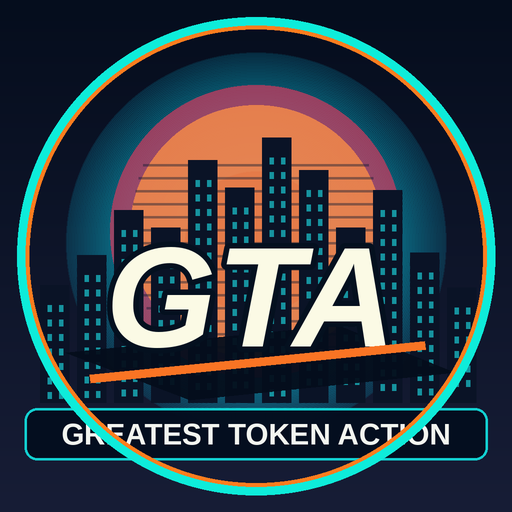

The Last Light in the Archive
ARCH receives a transmission that cannot be replayed.
Read transmissionA faceless fictional news network. Original characters. One new city built in public, one transmission at a time.

A silent original kinetic teaser. No game publisher affiliation, no coin issued.
ARCH receives a transmission that cannot be replayed.
Read transmissionSABLE discovers an abandoned key exchange with no locks attached.
Read transmissionA departure board displays a blank line; SABLE boards to find out what the city has been hiding.
Read transmissionSABLE tests the tower message against a physical clue instead of trusting a convenient interpretation.
Read transmissionThe radio tower transmits a new mystery for SABLE.
Read transmissionARCH reports the difference between a published story and a community.
Read transmissionThe Hotel Tomorrow gets its first real scene.
Read transmissionSABLE follows up on the day after everyone else has moved on.
Read transmissionARCH and SABLE take over the fictional newsroom during a worldwide gaming weekend.
Read transmissionThe newsroom looks for the smallest story on the eve of an enormous cultural weekend.
Read transmissionIn the fictional city, ARCH hears a broadcast no station claims to have sent.
Read transmissionNo official affiliations. No borrowed protagonists. The city invents its own mythology.
Read transmissionARCH and SABLE take the night shift in an original neon metropolis.
Read transmissionSABLE reports on the one thing a fictional city cannot manufacture: a genuine audience.
Read transmissionA fictional city. A new transmission. The first signal from Greatest Token Action.
Read transmissionThese are original fictional broadcasts by two recurring characters: ARCH (anchor) and SABLE (field reporter). The website and published stories are real. A public GTA token is not yet live. No partnerships, investments, user counts or future earnings are claimed.
SUGGEST A SCENE — GitHub sign-in required